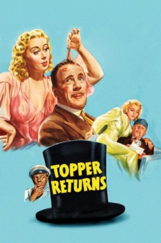

Country:United States, 88 minutes
Spoken languages:
Genres:Comedy, Fantasy, Mystery, Romance
Director(s):Roy Del Ruth
Writer(s):Gordon Douglas, Jonathan Latimer, Thorne Smith
Video Codec:Unknown
Number: 1749


Certification:
Storyline:
Topper is once again tormented by a fun-loving spirit. This time, it's Gail Richards, who was accidentally murdered while vacationing at the home of her wealthy friend, Ann Carrington (Landis), the intended victim. With Topper's help, Gail sets out to find her killer with the expected zany results.
Cast:
Medium: Original DVD,
Comments: Part of: Mystery Classics - 50 Movie Pack
Loaned: No
Aspect ratio: Unknown